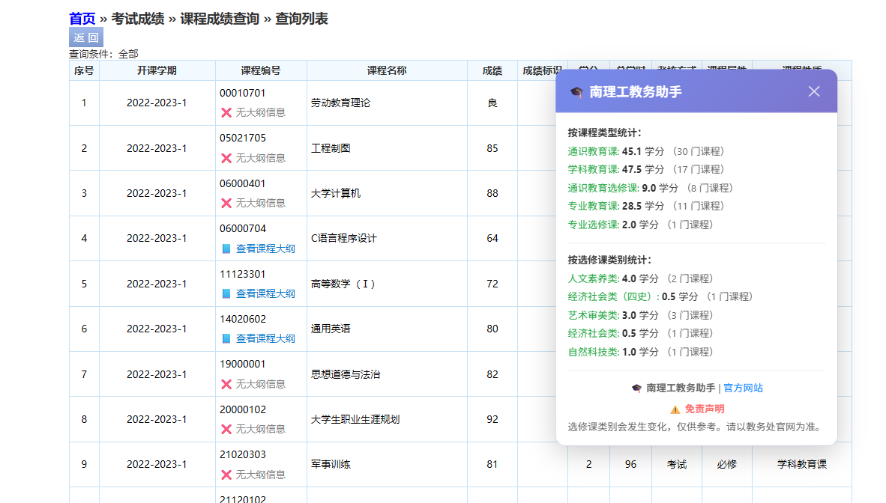
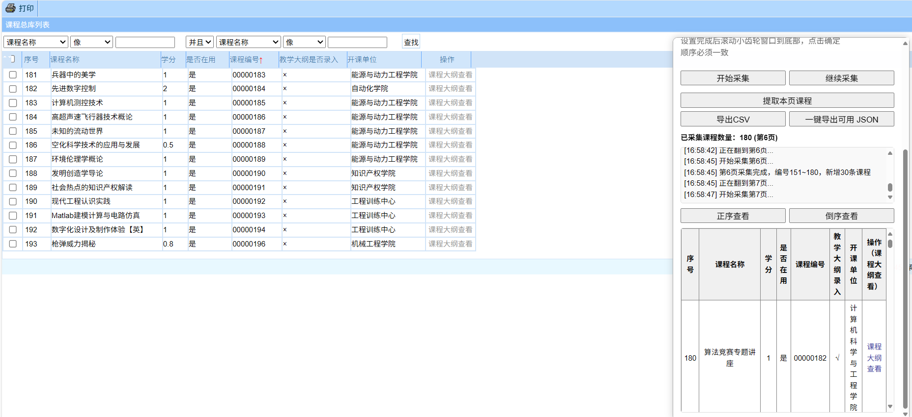
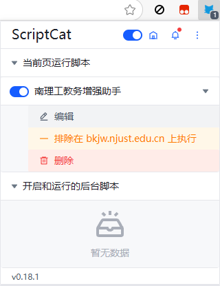
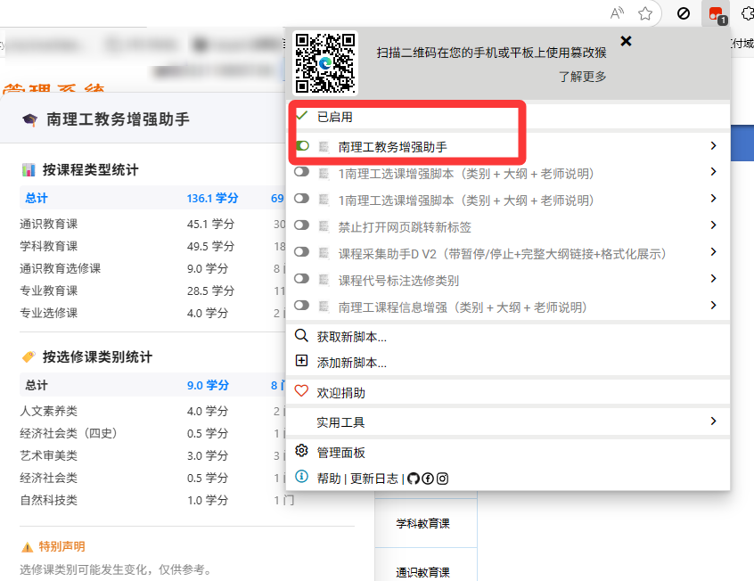
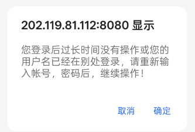

Star History
🧩 让教务系统更顺手的浏览器脚本
💡 支持南京理工大学和其他使用“湖南强智教务系统”的高校


详细图文说明和数据结构介绍请参见：
Tampermonkey 和 ScriptCat 都是脚本管理器，安装一个即可
scriptcat.org 和 GreasyFork.org 都是脚本仓库，选择一个即可
推荐以下浏览器插件（任选一个）：
对于在基于 Chrome 的浏览器中使用扩展（版本 5.3+）的用户，必须启用“允许用户脚本”切换开关（在 Chrome 138+ 中可通过扩展设置找到）或 开发者模式
南理工教务增强助手已经自带选修课数据和课程大纲数据。
两个网站找一个适合的安装脚本即可
数据采集助手 V2用于获取课程大纲数据，仅供开发者使用


访问 教务系统主页，脚本会自动启用，无需手动配置。
如果您在点击课程大纲时遇到以下提示：

证明课程总库登陆状态无效，为应对该问题，系统将在
自动尝试加载http://202.119.81.112:9080/njlgdx/pyfa/kcdgxz隐藏页面来刷新课程总库的登录状态。（大概率不成功，建议使用下方手动方法）
但如果您仍然无法访问，请直接访问以下任一地址手动刷新：
完成后您应当可以点击课程大纲。
请注意，使用智慧理工登陆时无法自动加载课程大纲，这可能影响本脚本正常运行。
推荐使用教务处官网登陆。
本脚本完全开源，不对可靠性做任何保证。
因使用本脚本产生的任何后果，开发者概不负责，请自行判断风险
欢迎提交 Issue、PR 或数据更新：
xxk.json（选修课分类）：建议每 4 年更新一次。
参考选修课采集流程（README.getXXK.md）
kcdg.json（教学大纲映射）：建议每年更新一次
参考 课程大纲采集流程（README.getKCDG.md）
本项目采用 MIT License 开源。
部分变量命名源于教务系统字段，例如：
| 变量名 | 含义 |
|---|---|
| kcdg | 课程大纲 |
| xxk | 选修课 |
| kczk | 课程总库 |
绝对不是英语水平差！
个别课程没有上传课程大纲信息，因此无法查看。
如果您确信课程总库里可以查看大纲信息，那么请您按上述流程更新kcdg.json信息
请把脚本前几行的
showNotifications: true 改为
showNotifications: false
项目由 NJUST OpenLib 社区维护
made with ❤️ by Light
版权所有 © 2024–2025
NJUST.WIKI